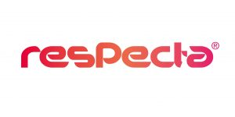

건강기능식품에 대해 알아보자.
- 건강기능식품이란
- 건강기능식품과 일반식품의 차이점
- 건강기능식품과 의약품의 차이점
- 고시형 건강기능식품
- 개별인정형 건강기능식품
WATH? 개별인정형 건강기능식
식품의약품안전처장은 고시되지 않은 건강기능식품의 원료 또는 성분에 대해서는 건강기능식품제조업, 수입식품 등 수입·판매업자 등으로부터 그 원료 또는 성분의 안전성 및 기능성 등에 관한 자료를 제출받아 검토한 후 건강기능식품에 사용할 수 있는 원료 또는 성분으로 인정할 수 있습니다(규제「건강기능식품에 관한 법률」 제15조제2항 본문 및 규제「건강기능식품에 관한 법률 시행규칙」 제20조의2).
다만, 질병의 치료·예방 효과 또는 성(性)과 관련된 기능이 있는 원료 또는 성분은 인정해서는 안 됩니다(규제「건강기능식품에 관한 법률」 제15조제2항 단서 및 「건강기능식품에 관한 법률 시행규칙」 제20조의3).
- 건강기능식품의 기준 및 규격」에 등재되지 않은 원료로, 식품의약품안전처장이 개별적으로 인정한 원료
- 영업자가 원료의 안전성, 기능성, 기준 및 규격 등의 자료를 제출하여 관련 규정에 따른 평가를 통해 기능성 원료로 인정을 받아야 하며 인정받은 업체만이 동 원료를 제조 또는 판매할 수 있습니다.>
